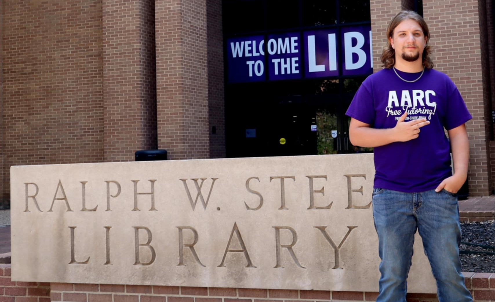
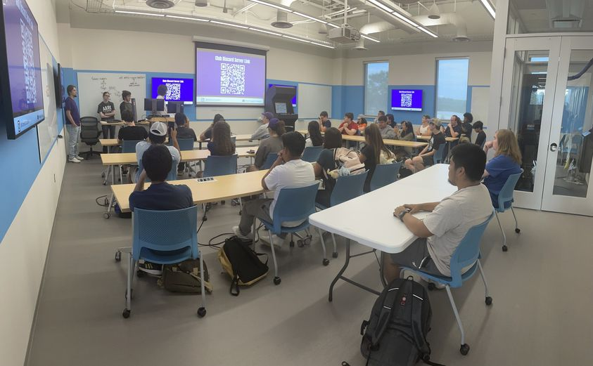
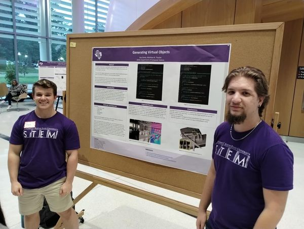
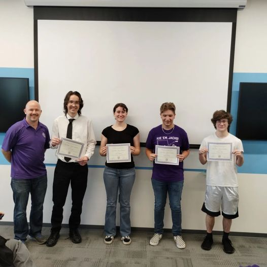

I am a computer science student with a minor in mathematics at Stephen F. Austin State University in Nacogdoches, Texas. I am the secretary of the Computer Science Club as well as a certified tutor for computer science at the Academic Assistance and Resource Center here at SFA. I am also working on a collaborative research project using virtual reality and artificial intelligence for 3D modelling. I am a student in SFA's School of Honors.
During the summer of 2022, I worked at the high school I graduated from in Pollok, Texas as a computer technician. I repaired Chromebooks that were used by the students, installed Promethean screens in classrooms, set up ethernet ports in classrooms, and reimaged computers to be used by elementary students. I also checked Chromebooks in and out to middle school and high school students.
I am an advanced computer science tutor and the team lead of the computer science tutors at the AARC (Academic Assistance and Resource Center) at SFA. I worked as a walk-in tutor where students could come in and ask questions and get help in their computer science courses and students could schedule one on one appointments with me to get help as well. I also held organized tutoring sessions for a specific class once a week. I served as a liaison between the computer science tutors and the science program director. I also participated in training new tutors hired at the AARC.
I am the Vice President of SFA's Computer Science Club. I help plan and conduct meetings. During these meetings, we develop arcade games for an arcade machine that was built by SFA's engineering students. We also hold more social meetings where we play party games.
I am the Chair of the Student Advisory Council in the Department of Computer Science at SFA. I help give feedback on potential faculty hires to the department and help with events to recruit new students.
I have been working with another computer science student and a professor on a research project training neural networks to play the game Mancala. We are developing a two player Mancala simulation. We will then create a series of neural networks that will play the game and compete in a tournament style bracket. The winning neural network will move forward and new neural networks will be mutations of it. This process will be repeated in what's called a genetic algorithm until we have a neural network that understands how the game works.
I have been working with another computer science student and a professor on a research project using an AI model and VR headsets. We are developing an application that will take a video of a real life object with a VR headset and send it to a separate computer with Nvidia's Neuralangelo AI. Neuralangelo will use the video to generate a 3D model of the real life object. The 3D render will then be sent back to the headset where it can be manipulated and analyzed. We have presented our progress and findings at the College of Science and Mathematics Undergraduate Research Conference and the Consortium for Computing Sciences in Colleges.
At the 2023 Programming Contest, the team that I was a part of earned first place in the novice division of the contest.
I earned a 4.0 GPA in all five of my semesters completed at SFA. This earned me a spot on the President's Honor Roll list, a list of students who earned a 4.0 GPA that semester, for all five semesters.
I have experience using several programming languages including Java, Python, C++, and C#. I also have experience with web development using HTML, CSS, JavaScript, and relational databases with SQL. I am versed in a few different environments including Linux, Git and GitHub, and Visual Studio.